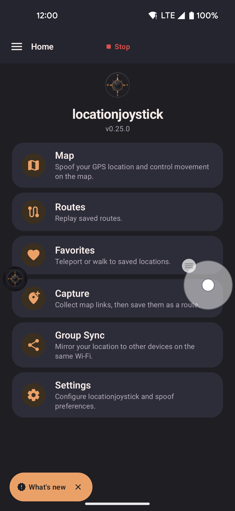
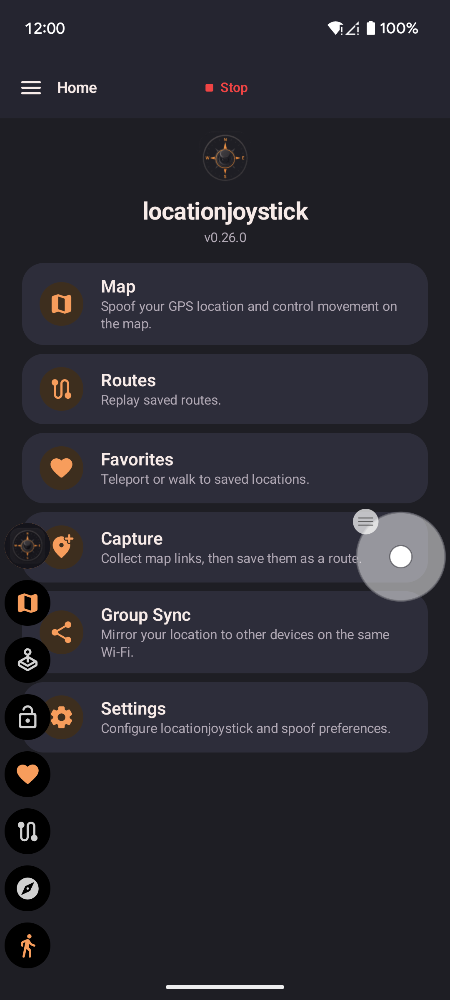
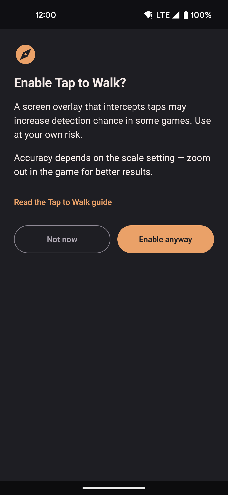

Overlays
Use floating overlays to control your spoofed location on top of any app. If an overlay does not appear, see Troubleshooting.
Floating joystick
The floating joystick is a round control that stays on top of any app. Drag it to move your fake location. Show or hide it from the floating widget. Spoofing stays on.

- Drag the center dial to move. Pull farther out to move faster, up to your selected speed.
- When unlocked, let go to stop. The stick returns to center; your position stays put.
- Drag the outer ring to move the joystick anywhere on screen.
- Lock mode keeps moving in the same direction after you let go.
- Drag to center to stop while keeping lock on. Pull outward to move again.
- Tap the widget lock button to unlock.
- Change speed with the widget speed cycle button without lifting your finger.
- Moving the stick pauses walk, route, roam, or planting so you can steer.
- Destination and progress are kept. Letting go leaves the activity paused.
- Tap Resume to continue or choose a new destination to start over.
- If you follow a leader, following turns off and you stay in the group.
- Touching the very center or dragging the outer ring does not pause anything.
Floating widget
The floating widget is a small panel of quick controls. Tap the round button to expand it. It stays on screen when you switch apps.

- Tap the button again to collapse the panel.
- Press and hold the app icon to show Pause and Stop.
- Pause turns spoofing off and keeps the widget. Other buttons fade until spoofing is on again, then Pause becomes Start.
- Stop ends spoofing and removes the widget. A short tap expands or collapses. Dragging moves the widget.
- Lists and route options follow Light or Dark mode from Settings → Menus → Appearance.
- Round buttons stay dark so you see them over other apps.
- The route start sheet has the same options as Replay options.
- Choose which controls appear and their order in Settings → Menus → App Features.
- Changes apply the next time you open the widget.
- While a route plays, pause and stop appear in the widget. A count such as
3/12shows your current stop. - Press and hold the paste button to show a Capture shortcut. The shortcut opens Capture. A short tap opens the paste box.
- To hide the widget button, use Hide floating widget in Settings.
Available widget controls
Buttons are grey when idle. A button turns green while its activity is moving and orange while it is paused.
| Control | What it does |
|---|---|
| Map shortcut (map icon) | Opens a small map you can move, above your game. Taps outside the map go to the game. Use the expand button for full screen, and shrink it again without losing your map position. Walk, teleport, paste coordinates, or start roaming from it. The N arrow keeps north at the top. Turn it off to rotate the map. |
| Show / hide joystick (joystick icon) | Shows or hides the joystick. The icon is green while you are moving the stick and grey otherwise. Moving the stick pauses the activity so you can steer. |
| Lock joystick | Shows the joystick if hidden, then keeps its direction after you let go. Tap again to unlock. Returning to the center stops movement but keeps lock on. The icon is green while the stick is moving and grey otherwise; the padlock shows whether it is locked. Locking alone does not pause an activity; moving the stick does. |
| Routes picker | Lists your routes. Tap one to start, rename, share, or delete it. The button is grey when idle, green while moving, and orange while paused. While a route runs, it shows pause, stop, and Previous / Next stop. Search and sort work as on the Routes screen. |
| Favorites picker | Lists your favorites with teleport and walk shortcuts. Open a favorite to rename or delete it. Save your current position as a favorite, or share it with the share button. Search and sort work as on the Routes & Favorites screen. |
| Paste coordinates | Opens a small box at the bottom of the screen to paste coordinates. You can still use the app above it, or shrink the box to a bar while you copy more points in another app. Off by default. Turn it on in Settings → Menus → App Features. See Map → Paste coordinates for formats and options. If you paused spoofing, tap Start before you use a paste action. |
| Roaming | Opens Walk around the block and Planting, so you can roam without opening the app. On by default. The button is grey when idle, green while moving, and orange while paused. While roaming runs, tap it for pause and stop. |
| Altitude override | Type a fixed height for your fake location. It replaces the automatic height until you reset it in Settings → Movement & GPS. Off by default. Turn it on with Show altitude override button in Settings → Menus → Privacy. |
| Tap to Walk crosshair | Places a clear layer over your app. Your next tap becomes your walk destination. Appears only when Tap to Walk is on. See Tap to Walk. |
| Speed cycle | One tap switches to the next speed. The icon shows the current speed. The new speed applies at once to the joystick, walking, roaming, and a playing route. |
Tap to Walk
Tap to Walk gives you two shortcuts to move your fake location with one tap, without opening the app. Both are off by default. Turn them on in Settings → Menus → Tap to Walk.
Settings
| Setting | What it does | Default |
|---|---|---|
| Scale | Meters per pixel on your screen. Match it to how far the game is zoomed in. Higher for zoomed-out maps, lower for zoomed-in. | 10 |
| Compass orientation | Keeps taps accurate when the game map rotates. Uses an Android accessibility feature. | Off |
| Game app | Pick your game from the list, then tap Test to check detection on your phone. | Select app |
Floating map quick walk
Turn it on in Settings → Menus → Privacy. Then a tap on the floating map walks to that spot at once. It skips the popup that asks whether to walk, teleport, or use roads.
Screen overlay
This adds a crosshair button to the floating widget. Tap it once to place a clear layer over your current app. Your next tap anywhere becomes your walk destination. The layer then disappears. To cancel, tap the close button in the bottom-right corner.

- Turning the overlay on opens a confirmation screen first.
- It explains the detection risk and that accuracy depends on the scale setting.
- If your phone supports compass orientation, it explains the accessibility permission.
- Nothing turns on until you tap Agree.
The overlay uses the Scale value to turn your tap into a real-world location. A higher number suits a zoomed-out game map. A lower number suits a zoomed-in map.
The overlay assumes north is at the top of the map. If the game rotates the map to follow your character, taps may land in the wrong place. Compass orientation can correct this.
- Some apps can detect a fake location and act on your account. Use this feature only in apps where you accept that risk.
- Some apps can notice the compass helper. If your game limits features, turn off the locationjoystick compass entry in your phone's accessibility settings.
Compass orientation
When the overlay opens, the app takes a picture of the screen and looks for your game's compass icon in the top-right corner. It uses the compass direction to rotate the walk target, so it lands correctly on a turned map. There is no separate switch. It runs once you turn on the accessibility feature below.
Setup
Compass orientation uses Android's Accessibility permission. Before Accessibility settings open, a full-screen message explains what the app looks at and why. The picture of your screen never leaves your phone. Tap Agree to continue, or Not now to keep it off.
You see this message during first-run setup (the optional Compass orientation step; skip it if you don't plan to use Tap to Walk, and Tap to Walk will ask again when you turn it on), when you first turn Tap to Walk on, and the first time you tap the crosshair button.
- Tap Agree on the message.
- Find locationjoystick compass in the list and turn it on.
- Return to locationjoystick. Compass detection is now on.
To see the message again, go to Settings → Menus → Tap to Walk → Compass orientation and tap Open Settings.
Check that it works
- Pick your game from the Game app list.
- Tap Test. The app switches to your game, reads its compass, and returns.
- The app shows the detected direction. If it finds nothing, make sure the compass is visible in the game.
If you do not pick a game, leave the list on Select app. Switch to your game, switch back to locationjoystick, and tap Test. The app briefly minimizes to read what is on screen.
Requirements
Both overlays need the Display over other apps permission. First-run setup walks you through it. On some phones, such as Xiaomi or Oppo, this permission can reset after a restart. If an overlay disappears, check your phone's autostart and battery settings.